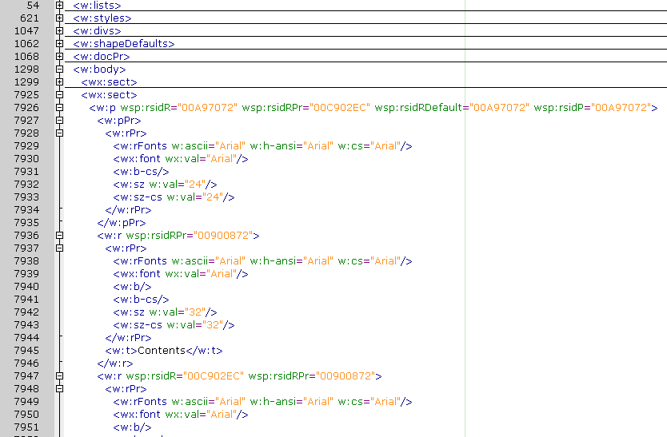

One of the advantages of an XML format for retention and disposal authorities is that 'views' of authorities aren't limited to those provided by State Records NSW. An agency might use a custom stylesheet to generate authorities with their own corporate styling, or to extract selections from larger authorities targetted at particular business units, or to consolidate a number of different authorities into a single document, etc.
But unlike stylesheets that produce HTML (for previewing authorities) or XML (for editing authorities), which are both relatively simple to create, producing Word stylesheets is a quite involved process that can take a day or two to achieve. The purpose of this guide is to assist users of Authority Editor to create Word stylesheets faster by providing a step-by-step walk through of key stages of the process.
This guide uses Queensland State Archives's template for retention and disposal authorities (available here) as an example. Queensland State Archives's template was chosen because it is publicly available and because it differs in interesting ways from State Records NSW's templates (e.g. the inclusion of a 'status' column and a 'legacy records' section), demonstrating how the information within retention and disposal authorities can be manipulated to create different views.
By the end of this guide we will produce:
Note: to use the Qld example stylesheets, you will need the latest version of Authority Editor (version 1.1, released 9 March 2011). To upgrade, install the upgrade patch (available here).
Custom stylesheets can be added to Authority Editor's 'data\stylesheets' directory (with the default install path it should be something like: 'C:\Program Files\Authority Editor\lib\ruby\site_ruby\1.8\ae\data\stylesheets'). To get the Queensland Archives example working, unzip the stylesheets file (above), copy the 'word_authority_qld.xsl' file to the 'data\stylesheets' directory, and copy the stylesheets in the unzipped 'include' directory into the 'data\stylesheets\include' directory.
Authority Editor’s ‘transform’ menu is built dynamically whenever the program is loaded from a manifest file (originally in the 'data\stylesheets' directory, from version 1.1 in the user directory: something like ‘C:\Documents and Settings\INSERT_USER_NAME_HERE\Application Data\AuthorityEditorSettings\xsl_manifest.xml’). After copying the stylesheets over, add a new entry to this manifest file.
Since our output is Word, we add a new ‘stylesheet’ element to 'word' section of the manifest file. Enter the following text:
<stylesheet>
<text>Qld authority</text>
<file>word_authority_qld.xsl</file>
</stylesheet>
Like so:
After reloading Authority Editor, you should see 'QLD word authority' in your Transform -> Word menu.
To make the most of this tutorial, you will need to learn some XSL basics and familiarise yourself with the WordML format. Two good resources for learning XSL are Roger Costello's tutorial and Jeni Tennison's XSLT pages. State Records NSW uses Microsoft's WordML format for its published views of authorities. Other formats (e.g. XSL-FO to PDF, ODF, or OOXML) could be considered, too. State Records NSW uses WordML simply because our version of MS Office is 2003. To get started with WordML, read the guide.
You will need a text editor to edit XSL files. Notepad suffices but is not ideal for this kind of work. If you haven't already got a good text editor, install either Geany or Notepad++.
You will also need a convenient way to execute XSL transformations. Authority Editor includes a transform engine and could be used however it is probably a little heavy duty for this purpose (creating XSL stylesheets is an iterative process involving lots of small changes and frequently re-doing the transform). MS Windows comes with an in-built XSL processor which you can trigger using this Microsoft JScript file:
You can download this script here. If necessary, adjust the InputXML and WordXSL variables to match the actual file names of your XML input file and XSL file. If you double-click on this script, your transformation should run, generating an output file labelled 'output.xml'. Right-click on 'output.xml' and select 'Open With -> Microsoft Office Word' to check the result.
Note: Microsoft's in-built XSL processor does not support EXSLT functions which are required to produce the index within the Queensland sample authority. For most purposes, the script will work, but if you need EXSLT functionality do the transforms in Authority Editor instead.
In your working directory, you should have three files: the XML file you want to convert, the XSL file you want to do the conversion, and the 'convert.js' script to trigger the MS transform engine.
Most of State Records NSW's stylesheets are composite stylesheets (one base stylesheet that includes a number of other stylesheets). This means that shared functionality (e.g. all of the Word stylesheets need to turn State Records NSW's XML markup into WordML markup) only needs to be written once, making stylesheets smaller and easier to maintain. These shared stylesheets can be found in Authority Editor's 'data\stylesheets\include' directory. When you create custom stylesheets, you should consider whether it is possible to save yourself work by incorporating any of the functionality from stylesheets in that directory. In the case of the Queensland example stylesheet, we incorporate a number of stylesheets from the 'include' directory:
Copy all of these files over into an 'include' directory within your working directory so that they are available while drafting the new transform.
While it would be possible to build a WordML XSL stylesheet up from scratch, this would be a lot of work as WordML is a very verbose format (much more so than, for example, HTML). It is much easier to work backwards from a Word template that you are already happy with.
To do this, we simply open the Word .dot or .doc file we want to recreate (e.g. Queensland State Archives' template). Then simply save this file as an XML document using the 'Save as' menu.
Now open that XML file in your text editor. You may find that the layout of this file is horrible. For example, when I open it in Geany it looks like this...
We can improve this by 'pretty printing' the XML. Handily, Authority Editor can handle generic XML and includes a pretty printer. To improve the layout: 1. open in Authority Editor, 2. save the file, then 3. re-open it in Geany (or your editor of choice).
Ok, now we have a nice looking XML file that represents the kind of word document we want to produce.
The next step is to turn it into an XSL file.
To do this we:
Your XML file should now look like:
In the example above I've used Geany's code wrapping function to hide much of the document, revealing the key parts of its structure (the guts of the document are within the w:body element).
Now simply change the file's .xml extension to .xsl and you are on your way!
By this stage you should have a working XSL file. But all it does is just reproduce the template. The next step is to actually get it to reflect the content of your XML file.
But first, we will make that task simpler by ripping our big XSL file apart into a series of smaller stylesheets that will be easier to work with.
Geany's code wrapping makes it a lot easier to find your way around. Have a dig around by expanding and hiding different parts of the document.
You will find that most of the important stuff in the template (the table of contents, the disposal schedule, and the index) can all be found within the second wx:sect of the w:Body element.
Scroll down a bit further and you will find the beginning of the disposal schedule.
This part of our XSL file:
Corresponds to this part of the word template:
If we manipulate this XSL we can make it automatically reflect our XML authority. In order to make working with it easier, lets cut the wx:subsection containing the disposal condition out of our XSL and paste it into a new file. Like so:
In the Qld example, you will see that I have also pulled out several other parts of the main XSL file (the binary image data that goes in the header, all the 'frontmatter', the table of contents, and the index). These new files all go in the include directory and you should add corresponding xsl:include elements to your main stylesheet.
You will find that much of the content of a WordML file is cruft that can be safely removed. Cleaning up is painstaking but is handy because it allows the relevant content in your XSL stylesheets to stand out. One change that I will typically make is to remove all the wsp: attributes. These attributes track changes aren't aren't necessary in a stylesheet. You can do a simple find and replace to delete all of these.
This may take a while (you will typically find hundreds of them in a WordML file). If you are using Geany, click on that "Use regular expressions" button in the Find and Replace dialogue and try this search: " wsp:[^>]*" (you don't want the quote marks but that first space is important).
Ok, well you are all set up now and ready to write some actual XSL. I leave this part to the reader! If you have trouble with it, I recommend looking at State Records NSW's XSL stylesheets where they handle similar problems to yours.
E.g. the 'render_word_authority.xsl' stylesheet in the 'include' directory demonstrates how State Records' disposal schedules are built.
The Queensland template differs in some interesting ways to State Records NSW's. Although Authority Editor can't perfectly handle all of these differences, it is flexible enough to represent most of Queensland's template.
Key points of difference:
If you decide to try creating your own custom stylesheet for Authority Editor please get in touch, I will be very happy to help. You might also post any questions to the mailing list: authorityeditor@googlegroups.com. Good luck!